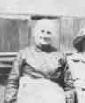

|
|
|
|
|
|
 Rosine Frederike BRÜCKNER (1848-1924) |
Rosine Frederike BRÜCKNER
• She emigrated about 1871 from Germany. 1 3 • She appeared in the 1880 census on 16 Jun 1880 in McKeesport, Allegheny, PA. 6 • She appeared in the 1900 census on 12 Jun 1900 in McKeesport, Allegheny, PA. 1 • She appeared in the 1910 census on 28 Apr 1910 in McKeesport, Allegheny, PA. 7 • She appeared in the 1920 census on 2 Feb 1920 in McKeesport, Allegheny, PA. 8 Rosine married Gottholt August DONATH, son of David Wilhelm DONATH and Marie Friederike MÜLLER, about 1871.1 (Gottholt August DONATH was born on 21 Jun 1847 in Germany 9, died on 18 Mar 1930 in McKeesport, Allegheny, PA 9 and was buried in McKeesport-Versailles Cemetery, McKeesport, PA 4 5.) |
1 Pennsylvania, Allegheny County, 1900 U.S. Census, Population Schedule, (Washington, D.C., National Archives and Records Administration), ED 429, Sheet 16, Line 69.
2 Commonwealth of Pennsylvania, Department of Health, Bureau of Vital Statistics, Death Certificate - Fredericka (Brickner) Donet, (20 May 1924).
3 McKeesport Daily News, Rosine (Brickner) Donet Obituary, (McKeesport, PA, 18 May 1924).
4 Thomas Hoey, Cemetery Headstone, Mckeesport-Versailles Cemetery, (Mckeesport, PA).
5 Della Reagan Fischer, McKeesport & Versailles Cemetery, 1856-1971, (McKeesport, PA 1974).
6 Pennsylvania, Allegheny County, 1880 U.S. Census, Population Schedule, (Washington, D.C., National Archives and Records Administration), ED 40, Sheet 42, Line 47.
7 Pennsylvania, Allegheny County, 1910 U.S. Census, Population Schedule, (Washington, D.C., National Archives and Records Administration), ED 129, Sheet 30, Line 51.
8 Pennsylvania, Allegheny County, 1920 U.S. Census, Population Schedule, (Washington, D.C., National Archives and Records Administration), ED 211, Sheet 8, Line 50.
9 Commonwealth of Pennsylvania, Department of Health, Bureau of Vital Statistics, Death Certificate - Gottholdt Donet, (30 Mar 1930).
{kind=link}